01-iptables命令
iptables命令语法顺序
-L
显示所选链的所有规则。如果没有选择链，所有链将被显示。
也可以和z选项一起 使用，这时链会被自动列出和归零。精确输出受其它所给参数影响。
-n 只显示数字ip、port
-t 指定表
-A append，追加最后
-I insert 最前面插入新规则
-D 删除规则
-p 指定协议，protocal，tcp、udp、icmp、all
--dport 目标端口
--sport source源端口
-s 源ip
-d 目标ip
-m 指定模块
-i 指定数据进入时，走哪个网卡
-o 数据流出时，走哪个网卡
-j 满足链之后的动作、drop、accept、reject
-F 删除所有规则
-X 删除用户自定义的链
-Z 链计数器为零
# author : by www.yuchaoit.cn
1.安装iptables
yum install iptables-services -y
2.加载防火墙内核模块
modprobe ip_tables
modprobe iptable_filter
modprobe iptable_nat
modprobe ip_conntrack
modprobe ip_conntrack_ftp
modprobe ip_nat_ftp
modprobe ipt_state
查看已加载的模块
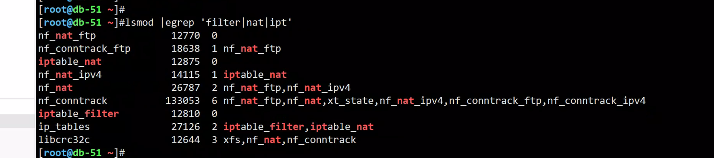
3.启动防火墙
1.停止firewalld，开启iptables
systemctl stop firewalld
systemctl disable firewalld
systemctl start iptables.service
systemctl enable iptables.service
4.iptables核心命令
1.查看规则
# -n --numeric -n 地址和端口的数字输出
# -L 列出所有链的规则
[root@db-51 ~]#iptables -nL
Chain INPUT (policy ACCEPT)
target prot opt source destination
ACCEPT all -- 0.0.0.0/0 0.0.0.0/0 state RELATED,ESTABLISHED
ACCEPT icmp -- 0.0.0.0/0 0.0.0.0/0
ACCEPT all -- 0.0.0.0/0 0.0.0.0/0
ACCEPT tcp -- 0.0.0.0/0 0.0.0.0/0 state NEW tcp dpt:22
REJECT all -- 0.0.0.0/0 0.0.0.0/0 reject-with icmp-host-prohibited
Chain FORWARD (policy ACCEPT)
target prot opt source destination
REJECT all -- 0.0.0.0/0 0.0.0.0/0 reject-with icmp-host-prohibited
Chain OUTPUT (policy ACCEPT)
target prot opt source destination
2.清空规则
iptables -F <- 清除所有规则，不会处理默认的规则
iptables -X <- 删除用户自定义的链
iptables -Z <- 链的计数器清零（数据包计数器与数据包字节计数器）
[root@db-51 ~]#
[root@db-51 ~]#iptables -F
[root@db-51 ~]#iptables -X
[root@db-51 ~]#iptables -Z
[root@db-51 ~]#
[root@db-51 ~]#
[root@db-51 ~]#iptables -L
Chain INPUT (policy ACCEPT)
target prot opt source destination
Chain FORWARD (policy ACCEPT)
target prot opt source destination
Chain OUTPUT (policy ACCEPT)
target prot opt source destination
3.添加防火墙规则
iptables -t <- 指定表d(efault: `filter')
iptables -A <- 把规则添加到指定的链上，默认添加到最后一行。
iptables -I <- 插入规则，默认插入到第一行(封IP)。
iptables -D <- 删除链上的规则
4.查看网络连接状态
NEW：已经或将启动新的连接
ESTABLISHED：已建立的连接
RELATED：正在启动的新连接
INVALID：非法或无法识别的
5.删除某个规则
iptables -nL --line-numbers 查看规则号码
[root@db-51 ~]#iptables -nL --line-numbers
Chain INPUT (policy ACCEPT)
num target prot opt source destination
Chain FORWARD (policy ACCEPT)
num target prot opt source destination
Chain OUTPUT (policy ACCEPT)
num target prot opt source destination
# 删除指定链上的指定序号
iptables -D INPUT 1
# 测试，给INPUT 加一个规则
# 禁止访问6379端口
# 区分大小写命令
[root@db-51 ~]#
[root@db-51 ~]#iptables -t filter -A INPUT -p tcp --dport 6379 -j DROP
[root@db-51 ~]#
[root@db-51 ~]#iptables -nL
Chain INPUT (policy ACCEPT)
target prot opt source destination
DROP tcp -- 0.0.0.0/0 0.0.0.0/0 tcp dpt:6379
Chain FORWARD (policy ACCEPT)
target prot opt source destination
Chain OUTPUT (policy ACCEPT)
target prot opt source destination
# 试试还能连接吗
[root@db-52 ~]#redis-cli -h 172.16.1.51 -p 6379
# 删除规则
[root@db-51 ~]#iptables -nL --line-numbers
Chain INPUT (policy ACCEPT)
num target prot opt source destination
1 DROP tcp -- 0.0.0.0/0 0.0.0.0/0 tcp dpt:6379
Chain FORWARD (policy ACCEPT)
num target prot opt source destination
Chain OUTPUT (policy ACCEPT)
num target prot opt source destination
# 删除规则
[root@db-51 ~]#iptables -D INPUT 1
# 再连接试试
[root@db-52 ~]#redis-cli -h 172.16.1.51 -p 6379
172.16.1.51:6379> ping
PONG
2.规则实战玩法
1.禁止22端口访问
危险操作，别瞎执行..
参数解释
-p #<==指定过滤的协议-p（tcp,udp,icmp,all）
--dport #<==指定目标端口（用户请求的端口）。
-j #<==对规则的具体处理方法（ACCEPT,DROP,REJECT,SNAT/DNAT)
--sport #<==指定源端口。
# 预测，执行后会怎么样？
iptables -t filter -A INPUT -p tcp --dport 22 -j DROP
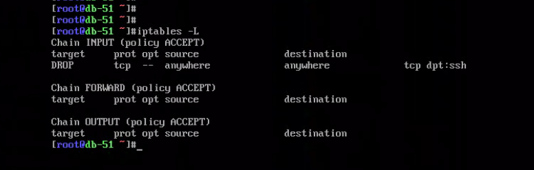
2.禁止某个ip访问具体网卡
iptables -F
# 禁止52机器访问51机器（ens33网卡）
iptables -I INPUT -p tcp -s 10.0.0.52 -i ens33 -j DROP
# 查看
[root@db-51 ~]#
[root@db-51 ~]#iptables -nL
Chain INPUT (policy ACCEPT)
target prot opt source destination
DROP tcp -- 10.0.0.52 0.0.0.0/0
Chain FORWARD (policy ACCEPT)
target prot opt source destination
Chain OUTPUT (policy ACCEPT)
target prot opt source destination
[root@db-51 ~]#
# 试试52和51通信
[root@db-52 ~]#ssh root@10.0.0.51
[root@db-52 ~]#ssh root@172.16.1.51
3.使用取反符号
禁止除了10.0.0.53以外的ip访问本机的ens33
# 危险命令
[root@db-51 ~]#iptables -A INPUT -p tcp ! -s 10.0.0.53 -i ens33 -j DROP
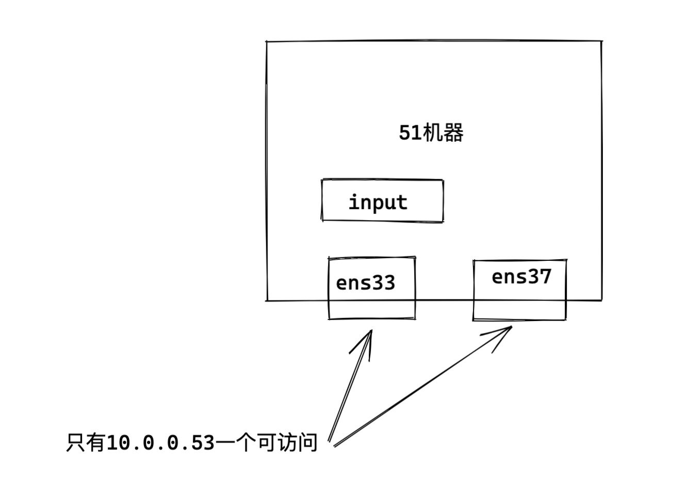
[root@db-53 ~]#ssh root@10.0.0.51
root@10.0.0.51's password:
Last login: Mon Aug 15 17:27:21 2022 from 172.16.1.52
[root@db-51 ~]#
查看51机器最新规则
[root@db-51 ~]#ssh root@10.0.0.51^C
[root@db-51 ~]#iptables -L
Chain INPUT (policy ACCEPT)
target prot opt source destination
DROP tcp -- 10.0.0.52 anywhere
DROP tcp -- !10.0.0.53 anywhere
Chain FORWARD (policy ACCEPT)
target prot opt source destination
Chain OUTPUT (policy ACCEPT)
target prot opt source destination
# 可见-A是追加规则
4.只允许10.0.0.0网段的数据包进入
iptables -A INPUT -p tcp ! -s 10.0.0.0/24 -i ens33 -j DROP
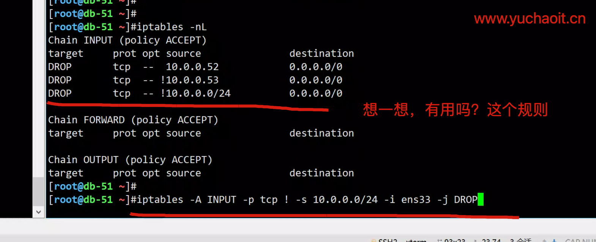
发现规则的加载顺序，因此想让这个规则有用，还得删除2号规则
[root@db-51 ~]#iptables -nL --line-number
Chain INPUT (policy ACCEPT)
num target prot opt source destination
1 DROP tcp -- 10.0.0.52 0.0.0.0/0
2 DROP tcp -- !10.0.0.53 0.0.0.0/0
3 DROP tcp -- !10.0.0.0/24 0.0.0.0/0
Chain FORWARD (policy ACCEPT)
num target prot opt source destination
Chain OUTPUT (policy ACCEPT)
num target prot opt source destination
[root@db-51 ~]#
[root@db-51 ~]#
[root@db-51 ~]#iptables -D INPUT 2
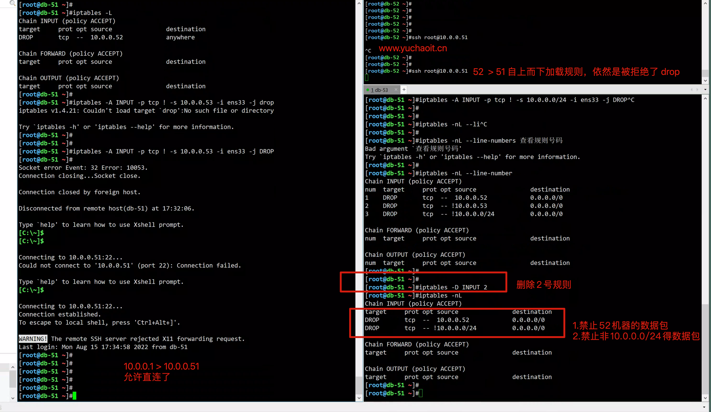
5.实现堡垒机登录唯一入口
要作为第一个规则，就是-I
iptables -I INPUT -p tcp ! -s 10.0.0.61 -j DROP
# 查看TCP
[root@db-51 ~]#
[root@db-51 ~]#netstat -an|grep 10.0.0.61
tcp 0 0 10.0.0.51:22 10.0.0.61:44198 ESTABLISHED
[root@db-51 ~]#
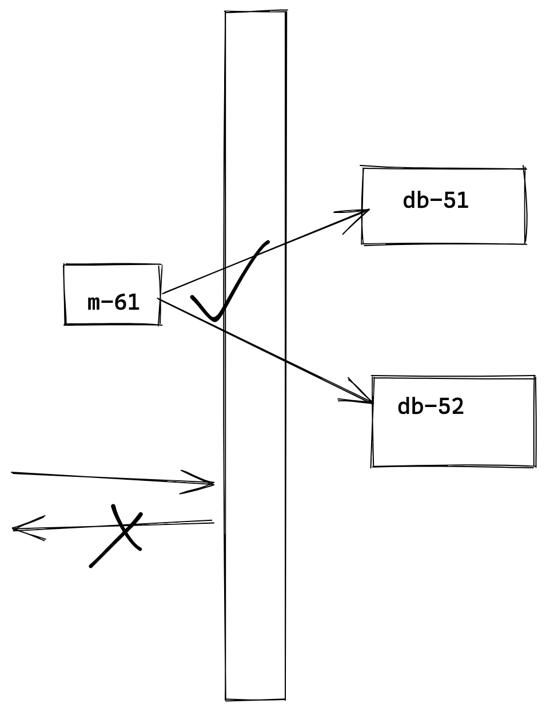
6.匹配端口范围
只允许172.16.1.0/24网段访问本机的22 ，6379，80端口
# 禁止多个目标端口被访问
# 只允许172.16.1.0/24网段访问本机的22 ，6379，80端口
iptables -I INPUT -p tcp ! -s 172.16.1.0/24 -m multiport --dport 22,6379,80 -j DROP
# 远程访问试试
[root@m-61 ~]#ssh root@172.16.1.51
[root@db-51 ~]#redis-cli -h 172.16.1.51 -p 6379
172.16.1.51:6379> ping
PONG
172.16.1.51:6379>
# 禁止端口范围语法
iptables -I INPUT -p tcp ! -s 172.16.1.0/24 --dport 6000:7000 -j DROP
# 注意iptable规则，自上而下的匹配
[root@db-51 ~]#iptables -nL
Chain INPUT (policy ACCEPT)
target prot opt source destination
DROP tcp -- !172.16.1.0/24 0.0.0.0/0 tcp dpts:6000:7000
DROP tcp -- !172.16.1.0/24 0.0.0.0/0 multiport dports 22,6379,80
Chain FORWARD (policy ACCEPT)
target prot opt source destination
Chain OUTPUT (policy ACCEPT)
target prot opt source destination
# 批量清理规则
[root@m-61 ~]#for i in 51 52 53;do ssh root@172.16.1.$i "iptables -F";done
7.禁止服务器被ping，服务器拒绝icmp的流量，给与响应
测试REJECT动作
# 常见的禁ping语句
#给INPUT链添加规则，指定icmp协议，指定icmp类型 是8(回显请求)， -s指定网段范围 -j 跳转的目标，即将做什么
iptables -A INPUT -p icmp --icmp-type 8 -s 0/0 -j REJECT
简写
iptables -A INPUT -p icmp --icmp-type 8 -j REJECT
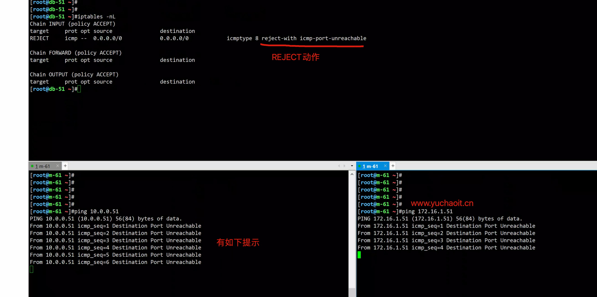
8.服务器禁ping，请求直接丢弃
测试DROP动作
iptables -A INPUT -p icmp --icmp-type 8 -s 0/0 -j DROP
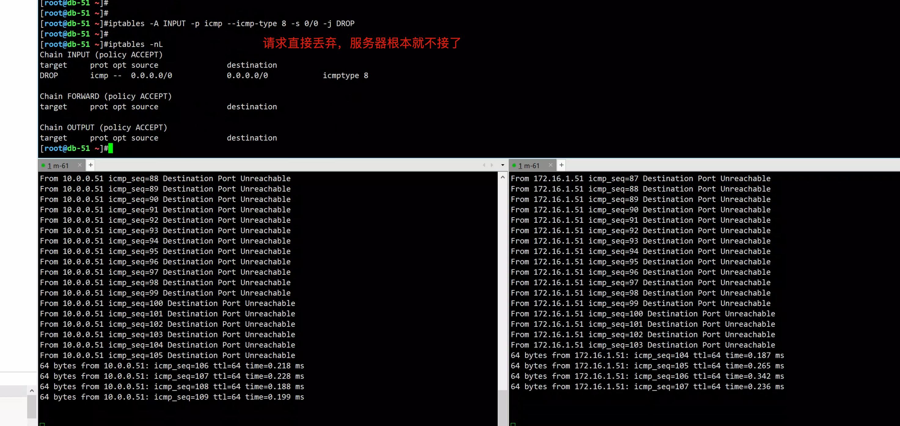
所以很明显，REJECT动作更绅士，提供了一定的排错思路。
DROP是很暴力的直接丢弃数据，不做任何反馈。
但若是抵挡恶意流量，DROP还是很必要的操作，可以延缓黑客的攻击进度。
9.练习题
1. 封禁10.0.0.51 访问本机
[root@m-61 ~]#
[root@m-61 ~]#iptables -I INPUT -s 172.16.1.51 -j DROP
[root@m-61 ~]#iptables -I INPUT -s 10.0.0.51 -j DROP
[root@m-61 ~]#
[root@m-61 ~]#iptables -nL
Chain INPUT (policy ACCEPT)
target prot opt source destination
DROP all -- 10.0.0.51 0.0.0.0/0
Chain FORWARD (policy ACCEPT)
target prot opt source destination
Chain OUTPUT (policy ACCEPT)
target prot opt source destination
# 试试
[root@db-51 ~]#ping 10.0.0.61
PING 10.0.0.61 (10.0.0.61) 56(84) bytes of data.
2.限制只有10.0.0.1可以ssh登录堡垒机
iptables -I INPUT -p tcp ! -s 10.0.0.1 --dport 22 -j DROP
或者
iptables -I INPUT -p tcp -s 10.0.0.1 --dport 22 -j ACCEPT
iptables -A INPUT -p tcp -s 0/0 --dport 22 -j DROP
3. 封禁任何人访问本机6379
[root@db-51 ~]#iptables -I INPUT -p tcp --dport 6379 -j DROP
[root@db-51 ~]#
[root@db-51 ~]#iptables -nL
Chain INPUT (policy ACCEPT)
target prot opt source destination
DROP tcp -- 0.0.0.0/0 0.0.0.0/0 tcp dpt:6379
Chain FORWARD (policy ACCEPT)
target prot opt source destination
Chain OUTPUT (policy ACCEPT)
target prot opt source destination
4.只允许走172内网，访问51机器的6379
[root@db-51 ~]#iptables -I INPUT -p tcp -s 172.16.1.0/24 --dport 6379 -j ACCEPT
[root@db-51 ~]#
[root@db-51 ~]#iptables -nL
Chain INPUT (policy ACCEPT)
target prot opt source destination
ACCEPT tcp -- 172.16.1.0/24 0.0.0.0/0 tcp dpt:6379
DROP tcp -- 0.0.0.0/0 0.0.0.0/0 tcp dpt:6379
Chain FORWARD (policy ACCEPT)
target prot opt source destination
Chain OUTPUT (policy ACCEPT)
target prot opt source destination
# 测试
[root@db-52 ~]#redis-cli -h 172.16.1.51 -p 6379
172.16.1.51:6379> ping
PONG
172.16.1.51:6379>
5.只允许走172内网，访问51机器的6379 ，简写
[root@db-51 ~]#iptables -nL
Chain INPUT (policy ACCEPT)
target prot opt source destination
DROP tcp -- !172.16.1.0/24 0.0.0.0/0 tcp dpt:6379
Chain FORWARD (policy ACCEPT)
target prot opt source destination
Chain OUTPUT (policy ACCEPT)
target prot opt source destination
10.封禁恶意访问网站80口的IP
iptables -I INPUT -p tcp -s 恶意ip/24 --dport 80 -j DROP
# 但是由于可能存在动态IP，能起到部分作用
3.实战玩法
关于防火墙规则，我们的3个链，防火墙规则有2个方案：
- 默认规则是ACCEPT，然后添加部分限制的规则语句
- 默认规则拒绝，然后添加允许通过的策略
3.1 关于web服务器的规则策略
iptables -F
iptables -X
iptables -Z
iptables -A INPUT -p tcp -m multiport --dport 80,443 -j ACCEPT
iptables -A INPUT -p tcp --dport 22 -j ACCEPT
iptables -A INPUT -s 10.0.0.0/24 -j ACCEPT
iptables -A INPUT -s 172.16.1.0/24 -j ACCEPT
iptables -A INPUT -i lo -j ACCEPT
iptables -P INPUT DROP
iptables -P FORWARD DROP
iptables -P OUTPUT ACCEPT
iptables -nL
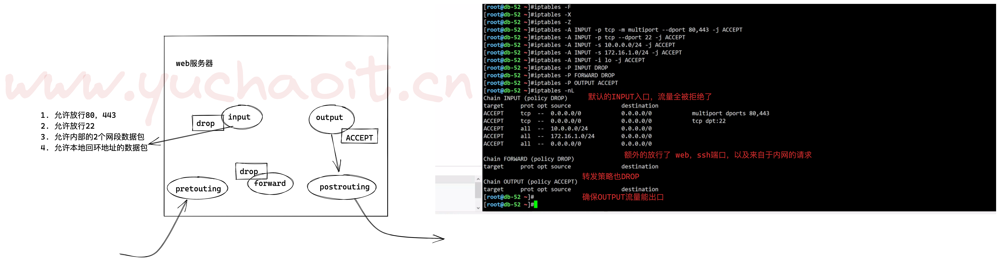
3.2 局域网共享上网
实现效果，m-61作为上网网关出口，实现数据包转发
其他机器只有172局域网地址，网关指向m-61
m-61机器
iptables -t nat -A POSTROUTING -s 172.16.1.0/24 -j SNAT --to-source 10.0.0.61
echo 'net.ipv4.ip_forward = 1' >> /etc/sysctl.conf
# 检查
[root@m-61 ~]#
[root@m-61 ~]#iptables -t nat -nL
Chain PREROUTING (policy ACCEPT)
target prot opt source destination
Chain INPUT (policy ACCEPT)
target prot opt source destination
Chain OUTPUT (policy ACCEPT)
target prot opt source destination
Chain POSTROUTING (policy ACCEPT)
target prot opt source destination
SNAT all -- 172.16.1.0/24 0.0.0.0/0 to:10.0.0.61
SNAT all -- 172.16.1.0/24 0.0.0.0/0 to:10.0.0.61
SNAT all -- 172.16.1.0/24 0.0.0.0/0 to:10.0.0.61
# 其他转发规则
sysctl -p
iptables -F
iptables -X
iptables -Z
iptables -A INPUT -p tcp -m multiport --dport 80,443 -j ACCEPT
iptables -A INPUT -p tcp --dport 22 -j ACCEPT
iptables -A INPUT -s 10.0.1.0/24 -j ACCEPT
iptables -A INPUT -s 172.16.1.0/24 -j ACCEPT
iptables -A INPUT -i lo -j ACCEPT
iptables -P INPUT DROP
iptables -P FORWARD DROP
iptables -P OUTPUT ACCEPT
iptables -A FORWARD -i ens37 -s 172.16.1.0/24 -j ACCEPT
iptables -A FORWARD -o ens33 -s 172.16.1.0/24 -j ACCEPT
iptables -A FORWARD -i ens33 -d 172.16.1.0/24 -j ACCEPT
iptables -A FORWARD -o ens37 -d 172.16.1.0/24 -j ACCEPT
# -i 输入接口
# -o 输出接口
# 允许
echo 'net.ipv4.ip_forward = 0' >> /etc/sysctl.conf
其他内网机器
思路
1. 关闭10网段网卡
2. 修改172网段网关，指向172.16.1.61，实现数据包转发
3.清除无用网络
[root@db-51 ~]#sed -i '$a NOZEROCONF=yes' /etc/sysconfig/network
[root@db-51 ~]#/etc/init.d/network restart
Restarting network (via systemctl): [ OK ]
4.确保客户端地址为
[root@db-51 ~]#route -n
Kernel IP routing table
Destination Gateway Genmask Flags Metric Ref Use Iface
0.0.0.0 172.16.1.61 0.0.0.0 UG 0 0 0 ens37
172.16.1.0 0.0.0.0 255.255.255.0 U 0 0 0 ens37
图解网络流量转发
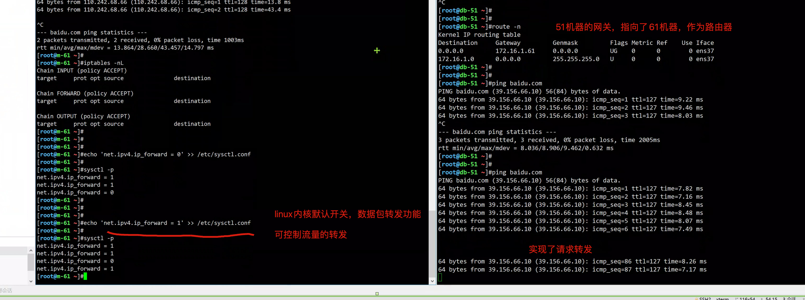
添加iptables规则的转发数据包
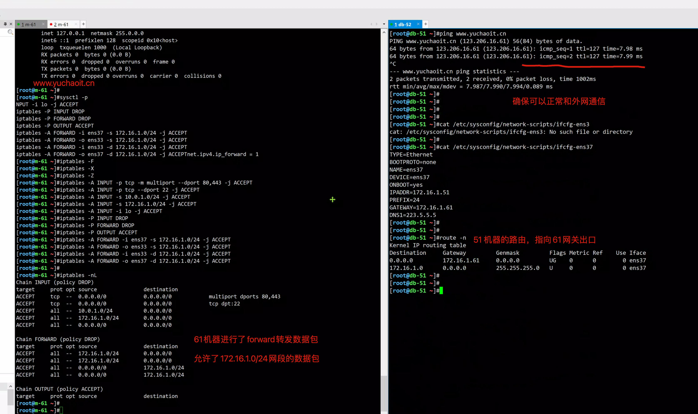
图解iptables配置原理
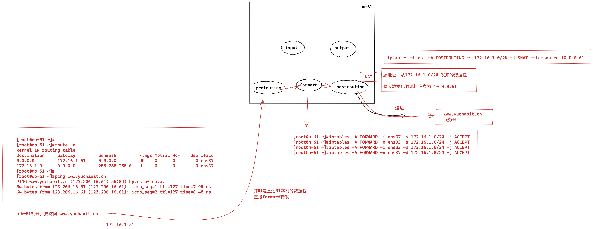
3.3 本地端口映射
其实就是在61机器本地，将20022端口的数据包，转发给22端口
# 禁用22端口直连流量
iptables -t nat -A PREROUTING -d 10.0.0.61 -p tcp --dport 20022 -j DNAT --to-destination 172.16.1.61:22
[root@m-61 ~]#
[root@m-61 ~]#iptables -t nat -nL
Chain PREROUTING (policy ACCEPT)
target prot opt source destination
DNAT tcp -- 0.0.0.0/0 10.0.1.61 tcp dpt:20022 to:172.16.1.7:22
Chain INPUT (policy ACCEPT)
target prot opt source destination
Chain OUTPUT (policy ACCEPT)
target prot opt source destination
Chain POSTROUTING (policy ACCEPT)
target prot opt source destination
测试映射效果
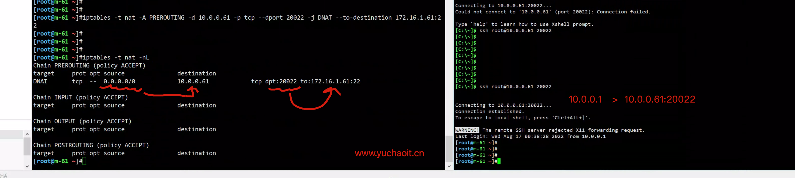
4.保存规则记录
iptables-save > /opt/www.yuchaoit.cn_iptables.txt # 保存到指定文件
iptables-save # 保存到配置文件，防止重启后丢失
iptables-resotre < /opt/www.yuchaoit.cn_iptables.txt # 恢复规则
踩坑指南
1.修改之前先导出备份一份
2.修改的时候小心别把自己关在外面
3.可以现在定时任务里添加一条定时清空的规则，等测试没问题再取消定时任务
4.如果加错了规则，导致拒绝了所有请求，以及没有给与正确放行的规则，且iptables -F命令不会恢复规则ACCEPT，因此只能想办法去物理机上，调整iptables规则。
- 要么是云控制台
- 要么是找机房人员恢复规则
练习题
1.从上往下依次匹配
2.一但匹配上,就不在往下匹配了
3.默认规则,默认的情况,默认规则是放行所有
禁止源地址是10.0.0.7的主机访问22端口
iptables -A INPUT -p tcp -s 10.0.0.7 --dport 22 -j DROP
禁止源地址是10.0.0.7的主机访问任何端口
iptables -A INPUT -p tcp -s 10.0.0.7 -j DROP
禁止源地址是10.0.0.8的主机访问80端口
iptables -A INPUT -p tcp -s 10.0.0.8 --dport 80 -j DROP
禁止除了10.0.0.7以外的地址访问80端口
iptables -A INPUT -p tcp ! -s 10.0.0.7 --dport 80 -j DROP
2条规则冲突,会以谁先谁为准
iptables -I INPUT -p tcp -s 10.0.0.7 --dport 22 -j ACCEPT
iptables -I INPUT -p tcp -s 10.0.0.7 --dport 22 -j DROP
禁止10.0.0.7访问22和80端口
iptables -I INPUT -p tcp -s 10.0.0.7 -m multiport --dport 22,80 -j DROP
禁止10.0.0.7访问22到100之间的所有端口
iptables -A INPUT -p tcp -s 10.0.0.7 --dport 22:100 -j DROP
禁止所有主机ping
iptables -A INPUT -p icmp --icmp-type 8 -j DROP
放行10.0.0.7可以ping
iptables -I INPUT 2 -p icmp --icmp-type 8 -s 10.0.0.7 -j ACCEPT
只允许10.0.0.7可以ping
ACCEPT icmp -- 10.0.0.7 0.0.0.0/0 icmptype 8
DROP icmp -- 0.0.0.0/0 0.0.0.0/0 icmptype 8
等同于上一条,优化版,只要不是10.0.0.7就不允许ping
iptables -I INPUT -p icmp --icmp-type 8 ! -s 10.0.0.7 -j DROP